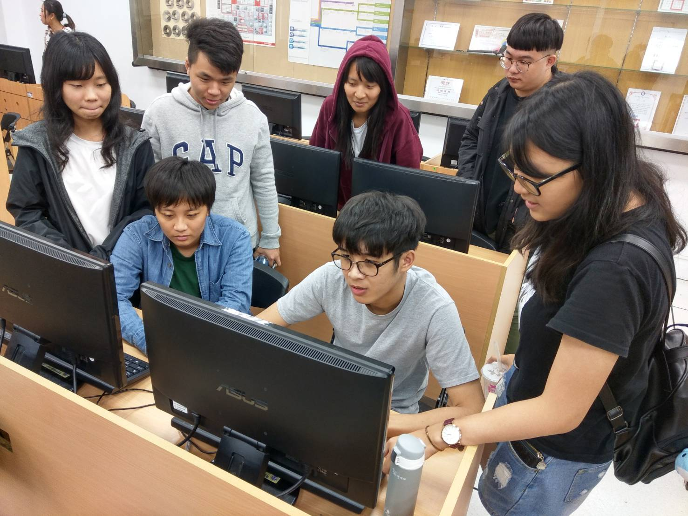

| 網頁設計活動心得 |
|  |
學習心得: 我們在這次讀書會，討論了HTML語法應用，HTML語法是建立網站的重要基礎，尤其在我們專業技能上、專題實作上的幫助更是多不可言，所以我們這次討論的重心是圍繞在HTML的語法應用，HTML語法大致上分為 13種 ，網頁架構、分隔標籤、排版標籤等等、今天我們針對幾個比較重點的部分進行討論。我們首要討論的是網頁架構，為什麼特別著墨於網頁架構呢？那是因為，網頁架構就像是人的骨架一樣，有良好的骨架，才有優良的身軀，網頁也是如此，當你有越精細、規劃完整的網頁架構，才有會有後續完整規劃的網頁產生。 其次才是有關網頁的版面設計、其他附屬功能進行討論，在HTML語法裡，各種語法的應用都要互相配合完整，才會有使人看得舒服、方便使用的網頁，但互相要搭配好是一件有挑戰性的事，我們目前在學習的目標上，目前規劃每個人負責幾塊領域，去進行吸收，在互相教導對方，以達到複習及互相教學、幫助達到更加有效率的學習方式。 |
|
討論內容：我們這周討論關於HTML在表單傳輸上的應用，從表單物件常見的文字欄位、按鈕、核取方塊等都是我們在做表單設計上滿常使用的物件。我們可以使用送出按鈕使得表單資訊傳送到由PHP、ASP和ColdFusion等建立的伺服器，其中ColdFusion與PHP和ASP不太一樣的部分是可以在表單新增特定的表單控制項。在HTML文件中，比較常使用無序列表、有序列表、定義列表、水平列表這四種列表。 心得：我們通過這次聚會大概了解在表單上常用的語法跟物件，雖然語法部分還沒有到非常深入了解，大部分只知道藉由語法先去架構伺服器再從表單獲取關於網路使用者資料，從統計數據到各個網站的會員註冊等都會使用到表單功能，還有在文件中常拿來使用的幾種整理列表，讓我比較有印象的是有序列表分由數字或英文作為編號的。 |
|
學習心得: 以前只知道HTML的寫法但也沒完整的寫過，但透過這次的讀書會，我們能接觸到更不一樣的。第一次寫XML語法的時候真的是覺得蠻不習慣的，沒辦法馬上理解，還要透過其他組員幫忙才可以。這個XML語法用來傳送及攜帶資料資訊，不用來表現或展示資料，XML的焦點是它說明資料是什麼，以及攜帶資料資訊 是一個讓文件能夠很容易地讓人去閱讀，同時又很容易讓電腦程式去辨識的語言格式和語法，正因為他能讓文件容易閱讀 也能讓電腦輕易辨識，所以我覺得這個語法好像比HTML還要簡單一些，以前寫HTML的時候 都要記得有些例如顏色色碼或是顏色的英文，有時候搞混可能就要重打或是再修正。所以我們覺得XML跟HTML各有優勢，所以現階段先熟悉XML日後，在編寫HTML的時候可以達到事半功倍的效果，不過之前我們比較常接觸HTML，所以相比HTML我們對XML的熟悉度是不太夠的，因此我們要找更多空閒時間去鑽研XML。 |
|
學習心得: 現在的網頁製作通常以HTML5以及CSS3為標準，我們透過實際編排實作去了解HTML5及CSS3的屬性及理解運算思維和基礎觀念；網頁設計分很多部分，有前端作業也有後端，使用HTML5作業的時候，套入許多不同的東西時，可以讓畫面變得更真實，而最新版的Safair、Chrome、Firefox以及Opera都支持一些HTML5的特性，現今的HTML5也完全支持CSS3，有些以前實現不了的，在HTML5當中加上JS就可以實現；初期學習HTML5時，畫面可以說是非常單調，只有一句話跟一個按鈕而已，但隨著每次的學習，也讓畫面越來越豐富，再加上CSS3美編，讓整個網頁更有層次感，不再像初期那樣的單調無趣，而且使用的版本由於是最新版，相較於前身，有許多更方便更好的使用方法，像是語法簡化等等，但相較之下，也有讓我覺得不一定是帶來好處的更新，像是現在的HTML5已不使用p、b和font等等來標記，但藉由CSS來完成，也是我們學習更多的機會。 |

|
學習心得: 經過我們大家一起學習讓我們對網頁設計又更加了解今天我們的主題是繪圖軟體的使用以及版面編排，我們看了很多種不同的編排方式，發現不同的編排方式對於使用者的瀏覽時間有一定的關係，板面要設計的簡單明瞭好操作，而顏色可以跟據色彩心理學去搭配網頁的主題，使網頁更加生動吸引人，討論過程中有提到成功的網頁，像是Youtube，可以調整背景為黑色可以讓深夜使用者保護眼睛，還有會跟據使用者常看的主題來顯示相關影片，以級清楚的清單讓使用者能夠更方便的選取想要的分類或動作，還提到Facebook臉書，以藍灰白來當主要色，在動態時報放上使用者可能有興趣的文章或是好友的動態讓使用過程中不會因為看不到想看的，而降低使用率，我們發現以上兩個例子都有一個缺點，就是廣告太多，雖然廣告可能是平台或創作者最大的收益，但過多的廣告反而會引起反感。 |
|
學習心得: 本次探討主題為css的排版,透過借閱書籍理解概論,並利用網路上的網站,實際演練學習,本次會議主要學習到三種常用於版面設計的css指令,架設基礎網站,利用Flexbox指令,設定文字區域,column指令讓文字排版以多欄呈現, float讓文字達到文繞圖的效果,並慢慢熟悉純文字編寫,不依賴圖形化網頁設計軟體,慢慢去提升自己的實力,看著網站從html,一行一行指令加上去,慢慢形成一個網站,其實非常有成就感,雖然剛開始練習只能慢慢GOOGLE找自己想要運用的語法,但經過今天這次小組討論,組員分享各自的學習方式,讓學習成效達到提升,實際演練完之後,再回頭看概論,對死板板的理論有更深的了解,我們也發現比起看書,實際操作更能讓人有印象,我們也有配合前幾週編寫的網頁,重新修改排版,結合工具書幫助網站增加更多功能,未來下一個目標就是將網站改寫成響應式網頁。 |
|
學習心得: 這次聚會有比較了解JQuery基礎語法，是一個新形態的JavaScript程式庫，語法規則分為兩個部分獲取物件和物件執行的部分，JQuery可以幫助我們更快的使用JavaScript建立的模組，就是把JavaScript用更白話、更迅速的寫法。粗略來說，JQuery 是一個讓 JavaScript 語法可以與網頁中 HTML & CSS 連結的工具，學會JavaScript還不錯因為可以用於滿多方面的，從網頁、伺服器、遊戲、甚至是 VR 上都可以看到他的應用，但普遍來說，最多人使用 JavaScript 的地方還是在網頁端。前幾周討論的HTML5和CSS3語法和這週討論的JavaScript就是前端語言的三個重要語法，HTML主要是描述網站架構、資訊，而CSS用來控制網站顯示的樣式，包含字型、顏色、背景等等，嚴格來說，JavaScript 才是寫網頁需要的第一個程式語言。JS 可以用來處理網站上需要邏輯判斷的功能，像是隨著使用者的行為動態載入網頁的不同內容。 |
|
學習心得: 這次聚會發現利用JavaScript可以給使用者帶來更好的體驗，甚至利用這一優點開發了大型網頁遊戲，於是這門小語言被重視了起來。現在，很多公司會招專門的JavaScript工程師，通常JavaScript是WEB前端開發的必備技能。一開始可能認為JavaScript有trim()這個很多語言都有的去行頭行尾空格的方法，當你瞭解JavaScript內建函式庫後你會發現原來在JavaScript中這些方法是要自己去實現。HTML是用來描述網站的架構、資訊。而 CSS 則是用來控制網站顯示的樣式，包含字型、顏色、背景等等。簡單的理解可以先把 HTML 想成網站的骨架、CSS 則是網站的整體外型，JavaScript 才是寫網頁需要的第一個程式語言。JS 可以用來處理網站上需要邏輯判斷的功能，像是隨著使用者的行為動態載入網頁的不同內容。簡單來說，像現在你在閱讀的這個頁面，反白文字會出現回應，粗略來說，JQuery 是一個讓 JavaScript 語法可以與網頁中 HTML & CSS 連結的工具。 |